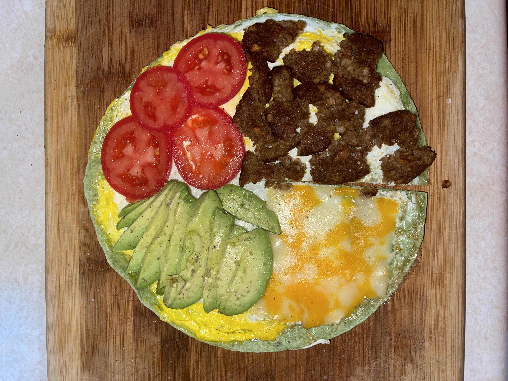

Good Eats
Food and I have never really been friends. But, for many reasons, I never hated food; I did not believe it was essential, which is quite the opposite if you look at the hierarchy of needs pyramid.
Avocado and spinach pesto for pasta.

A spinach wrap with cheese, avocado, tomatoes, and vegan sausage patties.
Egg muffins with tomatoes, spinach, cheese, and vegan bacon.
It took me a long time, and I still struggle with eating three meals a day, but I am now at a healthy weight and enjoy making time to make myself food. Prepping meals ahead of time has been a significant reason I am eating more because it makes it harder for me to say I have no time to make food. Instead, I grab the food I have already made and run out the door.